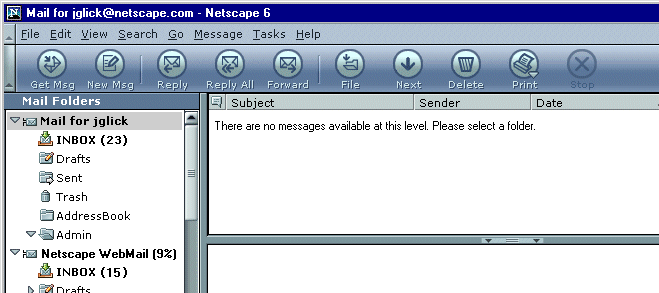
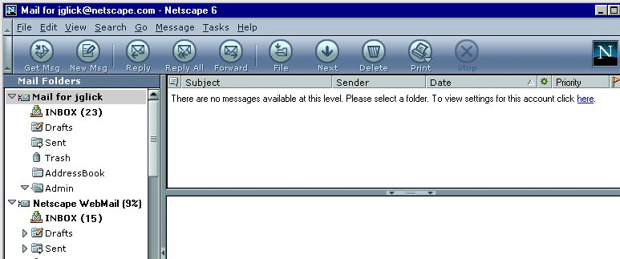
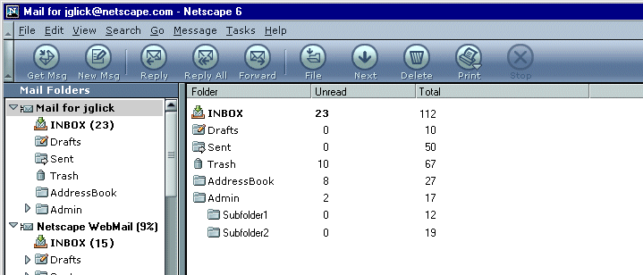
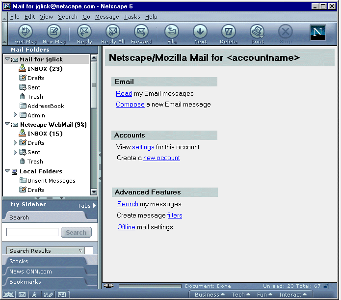
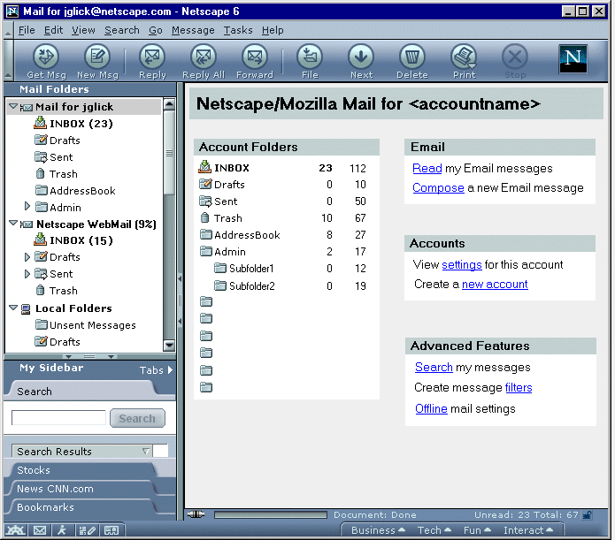
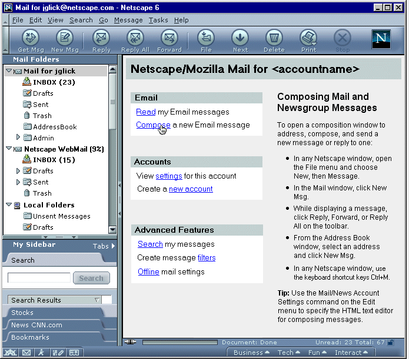

| Sea-Monkey: Messenger |
UI Design Ideas
|
| 3 Pane Mail - Account Level |
Last Modification:
|
| Author: Jennifer Glick
Creation Date: 12-8-00 |
Status: Draft |
When an account is migrated and Mail is launched for the first time, the Thread Pane and Message Pane area are blank. The account(s) are collapsed. I believe the default account level is selected. Users are confused as to why no mail is visible. Users clicked on the "Get Msg" button to access their mail. Because the account level is selected (and not an Inbox), nothing visually changes to the user in the Thread Pane (it remains blank). Users had to be told to expand the account and select the Inbox to see their mail.
Bug 49753 - Contents of the Mail Thread Pane when an Account Level item is selected, covers this issue and suggests some potential solutions.
In addition, as the default we could expand the account and select the Inbox. At least the first time the product is used (there's been some discussion that some people actually prefer the fact that a collapsed mail server means don't open my Inbox).
1. Don't let users select the Account Level if they can't do anything with it.
Matthew Thomas (mpt) 2000-12-09 09:07 wrote: Not an option because it would prevent keyboard-bound users from giving keyboard focus to an account in order to open its context menu. It would also prevent the usual mouse behavior of automatically selecting whatever item you are opening the context menu for if it wasn't selected already.
2. Display the following text in the thread pane: "There are no messages available at this level. Please select a folder."

3. Display the following text in the thread pane: "There are no messages available at this level. Please select a folder. To view settings for this account click here." (where "here" is a link to the Account Settings dialog for the selected account).

4. Provide static account information about the selected account and provide a link to the Account Settings dialogs. Becomes 2 pane mail instead of 3 pane mail.
5. Display account information and allow the user to modify account settings. Becomes 2 pane mail instead of 3 pane mail.
6.When the Account level is selected, display its subfolders in the right pane with summary info (total read/unread). Becomes 2 pane mail instead of 3 pane mail.

7. Display links to Mail related tasks. Context specific to selected account. Becomes 2 pane mail instead of 3 pane mail.

8. Combination of links to Mail related tasks and account/folder summary. Becomes 2 pane mail instead of 3 pane mail.

9. Combination of links to Mail related tasks and tips/help for hovered over topic. Becomes 2 pane mail instead of 3 pane mail.
